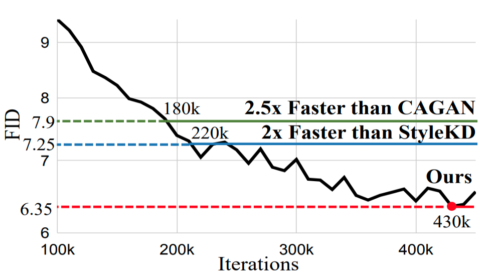
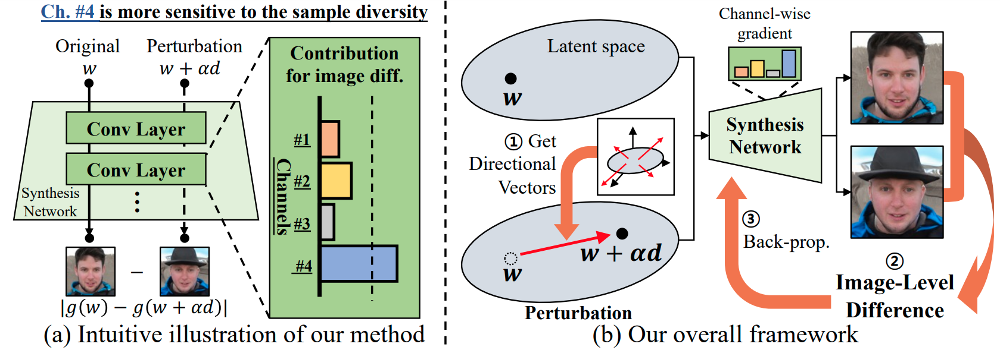
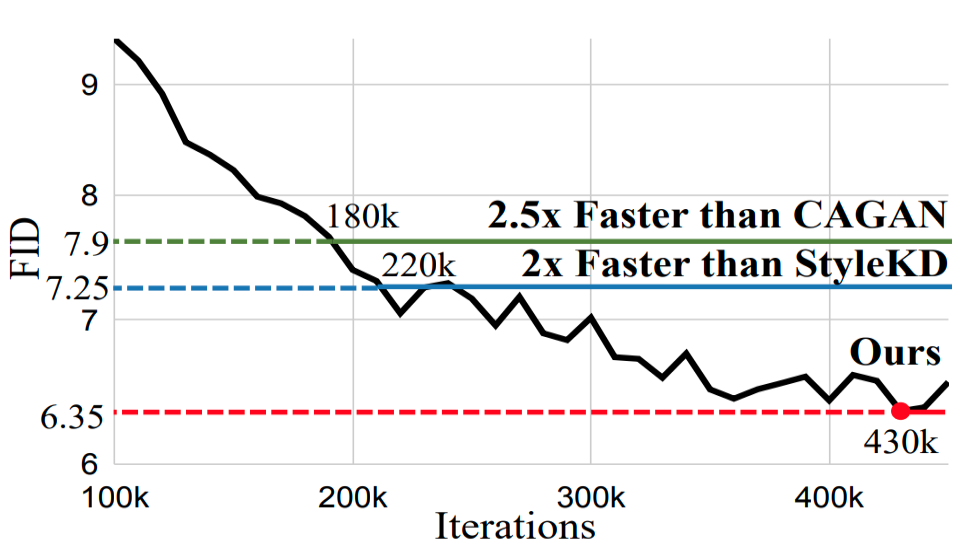
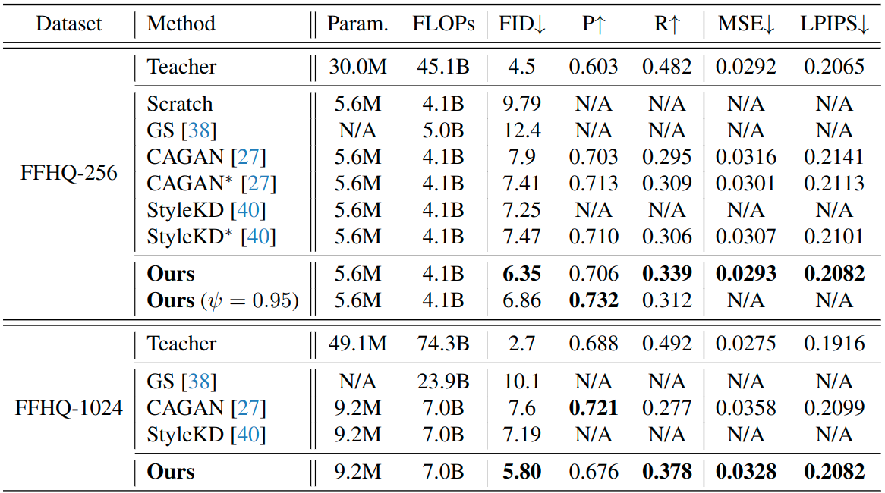

FID graph in FFHQ-256
We visualize FID curve during training and validate that ours achieves previous SOTA FIDs only with 2\(\times\) fewer iterations.
StyleGAN has shown remarkable performance in unconditional image generation. However, its high computational cost poses a significant challenge for practical applications. Although recent efforts have been made to compress StyleGAN while preserving its performance, existing compressed models still lag behind the original model, particularly in terms of sample diversity.
To overcome this, we propose a novel channel pruning method that leverages varying sensitivities of channels to latent vectors, which is a key factor in sample diversity. Specifically, by assessing channel importance based on their sensitivities to latent vector perturbations, our method enhances the diversity of samples in the compressed model. Since our method solely focuses on the channel pruning stage, it has complementary benefits with prior training schemes without additional training cost.
Extensive experiments demonstrate that our method significantly enhances sample diversity across various datasets. Moreover, in terms of FID scores, our method not only surpasses state-of-the-art by a large margin but also achieves comparable scores with only half training iterations.
(a) Intuitive illustration of our method. We compare four channels (Ch. #1, 2, 3, 4) by evaluating their responses when we pass the same latent vector \(w\) and its perturbed counterpart \((w+\alpha d)\). By investigating the contribution of each channel to resulting image difference, we determine the sensitivity of channels to the latent perturbation. In this example, Ch. #4 is highly sensitive to the perturbation, while Ch. #1, 2, 3 exhibit low sensitivity. Consequently, in terms of preserving sample diversity, Ch. #4 is suitable for retaining.
(b) Our overall framework. We aim to assess the contribution of each channel to the sample diversity by measuring its sensitivity to latent vector perturbation. In detail, 1) we sample a directional vector for the perturbation, 2) we compute the image-level difference caused by the latent vector perturbation, and 3) we calculate channel-wise gradient magnitudes induced by the difference image. The channel-wise sensitivity to the sample diversity is determined by its gradient magnitudes. 
We visualize FID curve during training and validate that ours achieves previous SOTA FIDs only with 2\(\times\) fewer iterations.
These FID score improvements demonstrate the superiority of the distribution-matching capability of the proposed method.
@article{chung2024diversity,
title={Diversity-aware Channel Pruning for StyleGAN Compression},
author={Chung, Jiwoo and Hyun, Sangeek and Shim, Sang-Heon and Heo, Jae-Pil},
journal={arXiv preprint arXiv:2403.13548},
year={2024}
}